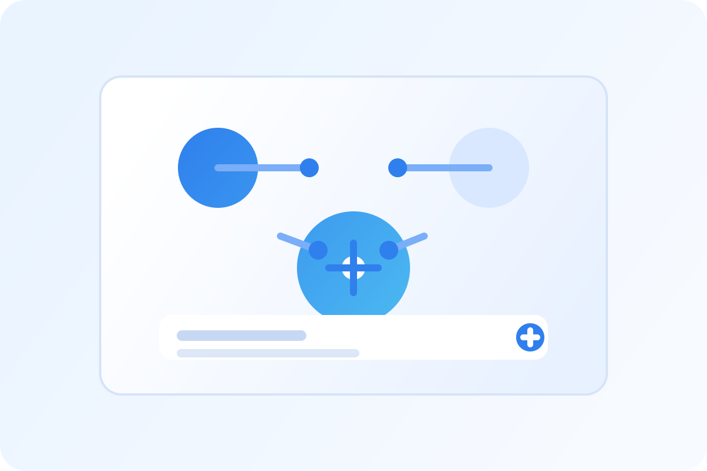
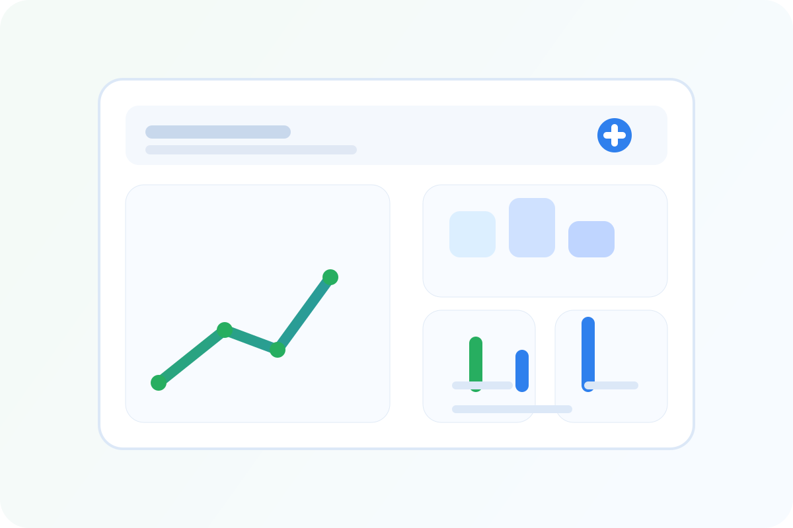

Consulenza AI e automazione
Guardo dove il tuo team perde ore in lavoro ripetitivo, scelgo i casi d'uso in cui l'AI rende davvero e li integro negli strumenti che già usi: gestione documentale, assistenti, estrazione dati, ricerca interna.
Servizi
Sviluppo e mantengo software gestionale dal 1998, dai mainframe bancari alle moderne web app. Ti aiuto a introdurre l'AI dove fa risparmiare tempo davvero, a costruire applicazioni web affidabili e a ottenere risposte chiare dai tuoi dati.
Cosa offro
Ogni servizio può essere un intervento breve e mirato o parte di un progetto più ampio. Lavori direttamente con me, dalla prima call alla consegna finale.
Guardo dove il tuo team perde ore in lavoro ripetitivo, scelgo i casi d'uso in cui l'AI rende davvero e li integro negli strumenti che già usi: gestione documentale, assistenti, estrazione dati, ricerca interna.
Applicazioni gestionali con back end .NET e front end Angular, pensate per lavori ricchi di dati e regolamentati. Ho usato questo stack per software sanitario che copre accettazione dei pazienti, esami di laboratorio e dialisi.
Drupal va ben oltre i siti di contenuti. Ci costruisco moduli personalizzati e sistemi gestionali completi, come registrazione, pianificazione e controllo accessi per un'organizzazione non profit di Milano.
Ho lavorato su sistemi bancari COBOL/CICS e su software ERP Java, quindi so leggere il vecchio codice e capire cosa fa. Lo espongo tramite API pulite, lo collego a nuove applicazioni oppure pianifico una migrazione graduale.
Dashboard costruite attorno alle decisioni che devi prendere. Collego i tuoi database esistenti, concordo con te la definizione di ogni KPI e mantengo i numeri accurati e aggiornati.
Un secondo parere esperto su architettura, qualità del codice e flusso di sviluppo. Ti do raccomandazioni concrete, ne spiego le ragioni e ti aiuto ad applicarle, compreso lo sviluppo assistito dall'AI.
AI + Dashboard
Non serve un grande programma di AI per vedere dei risultati. Parto da un processo concreto, come smistare i documenti in arrivo, preparare risposte o estrarre cifre dai report, e lo automatizzo dentro gli strumenti che il tuo team usa già. Una dashboard ti mostra poi cosa è cambiato.

Assistenti, elaborazione di documenti e automazione dei flussi che tolgono al tuo team il lavoro di routine.

I KPI che contano, raccolti in un unico posto e sempre aggiornati, così puoi agire sui numeri.
Come lavoro
Sai sempre cosa si sta costruendo, quando lo vedrai e quanto costa.
Una breve call per capire obiettivi, sistemi attuali e vincoli. Se non sono la persona giusta, te lo dico.
Una proposta scritta con perimetro, milestone, tempi e costi, così concordiamo cosa significa "finito" prima di iniziare.
Si lavora per iterazioni brevi con demo regolari. Vedi presto software funzionante e puoi cambiare le priorità lungo il percorso.
Codice pulito, documentazione e una consegna ordinata al tuo team, con supporto continuativo se serve.
Con chi lavoro
In oltre 25 anni ho lavorato in settori in cui il software deve essere affidabile e i dati vanno trattati con cura.
Flussi clinici, dati dei pazienti e sistemi di laboratorio in cui l'accuratezza è essenziale.
Sistemi bancari core e mainframe, alti volumi di transazioni, controlli rigorosi.
Sistemi gestionali che aiutano piccoli team e volontari a servire più persone.
Capacità di sviluppo operativa e consulenza senior, senza i costi di struttura di una grande società.
Dimmi cosa vuoi ottenere. Ti risponderò con un parere onesto su come posso aiutarti e su quale potrebbe essere il passo successivo.